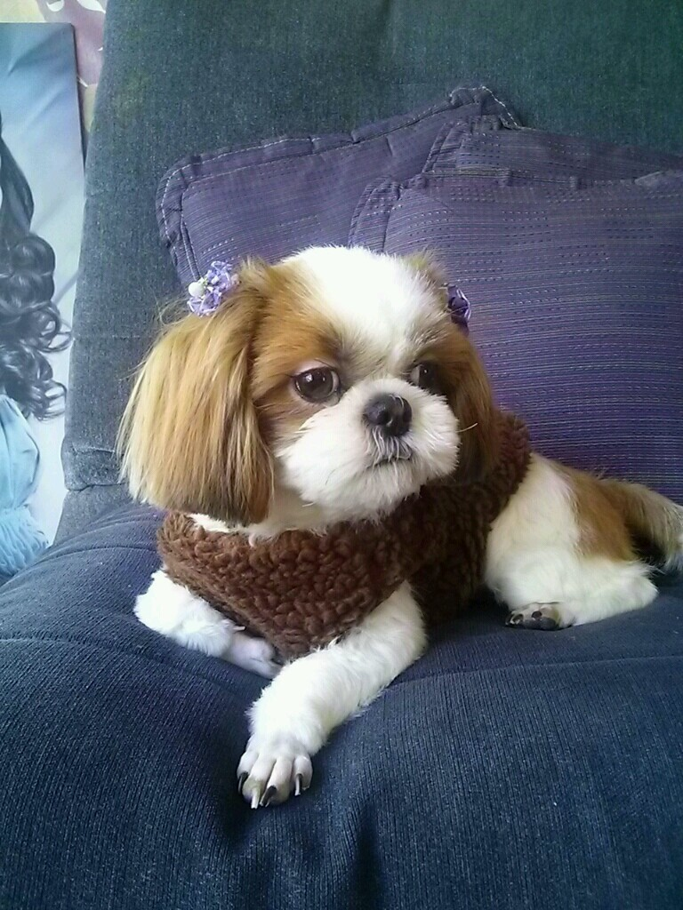

회사소개
사랑하는 반려동물의 마지막 길을 정성껏 함께하겠습니다.
힘든 이별의 순간, 슬픔을 위로하고 아름다운 추억을 간직할 수 있도록 최선을 다해 돕겠습니다.
장례 절차는 물론, 추모 공간과 다양한 서비스를 제공하여 편안한 작별 인사를 드릴 수 있도록 준비했습니다.
반려동물과 함께했던 소중한 시간을 기억하며, 존중과 애정을 담아 마지막 순간까지 함께합니다.
합리적인 비용으로 최고의 서비스를 제공하며, 언제든 편하게 문의하실 수 있습니다.
반려동물의 마지막을 더욱 특별하고 의미있게 만들어 드리겠습니다.
믿고 맡겨주시면 후회 없는 선택이 되도록 최선을 다하겠습니다.
소중한 가족과의 이별을 따뜻하게 보내드리기 위해 항상 노력하겠습니다.
[대표이사 안미정]
